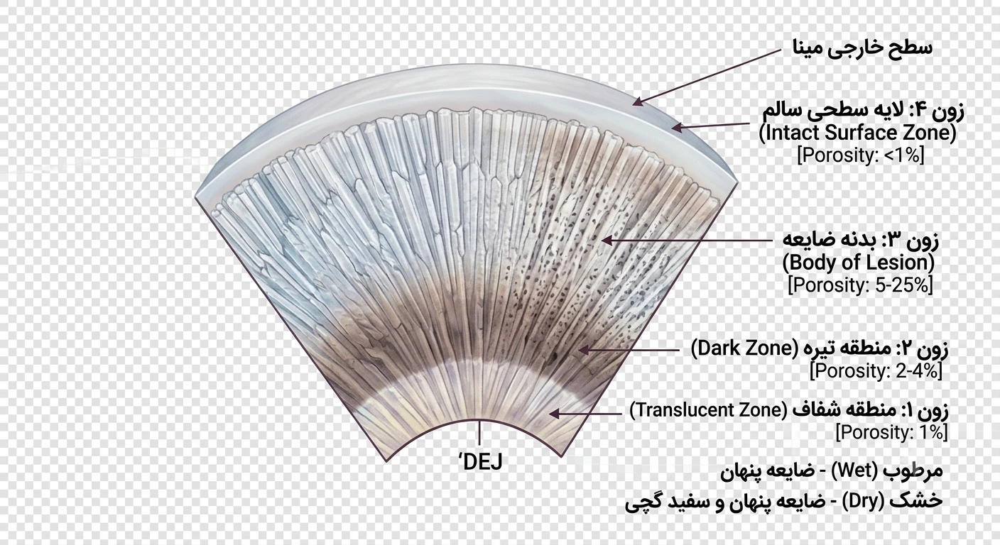
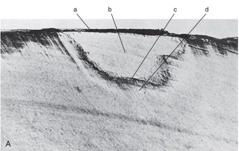
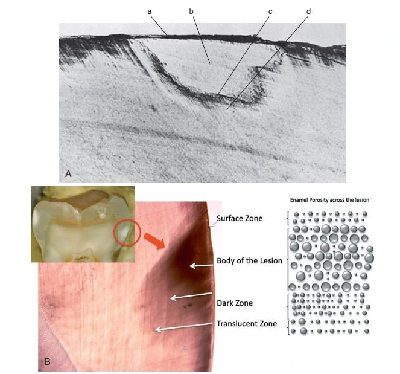

نسخه استخراجشده؛ ترجمه یا تأیید علمی انجام نشده است. وضعیت: captured
ضایعه اولیه مینا (Smooth Surface / Early Enamel Caries) که در ظاهر به صورت لکه سفید (White Spot) گچی دیده میشود، یک تخریب زیرسطحی (Subsurface Demineralization) است.
وقتی مقطعی از این ضایعه را در نور پلاریزه میکروسکوپ بررسی میکنیم، ۴ منطقه (Zone) مجزا از عمق (نزدیک به DEJ) به سمت سطح خارجی مینا دیده میشود. نکته طلایی این است که سطح خارجی مینا تقریباً سالم باقی میماند.

وقتی مقطعی از این ضایعه را در نور عبوری میکروسکوپ (Transmitted Light) بررسی میکنیم (تصویر A در "4 زون.JPG")، ۴ منطقه (Zone) مجزا از عمق دندان (در جبهه پیشتاز ضایعه) به سمت سطح خارجی مینا دیده میشود. نکته حیاتی این است که سطح خارجی مینا (a) سالم به نظر میرسد.

۱. Translucent Zone (منطقه شفاف - d): عمیقترین زون در جبهه پیشتاز ضایعه.
۲. Dark Zone (منطقه تیره - c): احاطهکننده بدنه ضایعه.
۳. Body of Lesion (بدنه ضایعه - b).
۴. Surface Zone (لایه سطحی - a): سالم به نظر میرسد.

در تصویر B ، گراف سمت راست به وضوح نشان میدهد که میزان تخلخل (Porosity) در طول ضایعه تغییر میکند. این تخلخل کلید درک هایستوپاتولوژی است:
Translucent Zone (شفاف): اولین منطقه دمینرالیزاسیون در عمق. (در تصویر A با حرف d).
Dark Zone (تیره): این زون بدنه ضایعه را احاطه میکند (در تصویر A با حرف c). تیره دیده شدن آن به دلیل به دام افتادن هوا در منافذی با اندازههای مختلف است که حاصل فرآیند ریمینرالیزاسیون میباشد.
Body of Lesion (بدنه ضایعه): بزرگترین زون و مرکز اصلی معدنیزدایی است (در تصویر A با حرف b). در این زون، خطوطRetzius برجسته و نمایانتر دیده میشوند (مطابق توضیح تصویر A).
Surface Zone (سطحی): سقف هیپرمینرالیزه و تقریباً سالم روی ضایعه (در تصویر A با حرف a). این لایه سقف متخلخل زیرین را پوشانده است.
چرا خشک کردن با پوآر هوا لکه سفید (White Spot) را نمایان میکند؟ این پدیده بر پایه تفاوت ضریب شکست نور (Refractive Index) بین آب و هواست:
🔑 منطق اپتیکی:
ضریب شکست مینای سالم: ۱.۶۲
ضریب شکست آب: ۱.۳۳
ضریب شکست هوا: ۱.۰۰
وقتی تخلخلهای ضایعه (مخصوصاً بدنه ضایعه) پر از آب هستند، تفاوت ضریب شکست با مینا کم است و ضایعه پنهان میماند.
با گرفتن پوآر هوا، هوا جایگزین آب شده و به دلیل تفاوت شدید ضریب شکست (۱.۶۲ در برابر ۱.۰۰)، نور به جای عبور، منعکس شده و ضایعه سفید گچی دیده میشود.
📌 قاعده کلینیکی ارزیابی عمق:
اگر ضایعه فقط پس از خشک کردن دیده شود ضایعه سطحی است (کمتر از نیمه مینا).
اگر ضایعه در حالت مرطوب (Wet) هم دیده شود ضایعه عمیقتر است (به نیمه داخلی مینا یا DEJ رسیده).
⚠️ تله سوند تیز (Explorers Can Cause Cavitation):
لایه سطحی ضایعه اولیه (a) به ظاهر سالم است، اما زیر آن، بدنه ضایعه متخلخل است. استفاده از یک سوند تیز (Sharp Explorer) با فشار میتواند به راحتی در مینای خارجی نفوذ کرده و باعث شکستن سقف سطحی و ایجاد حفره (Cavitation) در یک ضایعه فعال شود.
🚫 دستورالعمل: هرگز برای تشخیص لکههای سفید (White Spot) از سوند تیز استفاده نکنید. تشخیص باید چشمی و با کمک دهیدراتاسیون باشد.نوع سؤال: ساخت کلمه · 3 خانه
حروف منبع: E · J · D